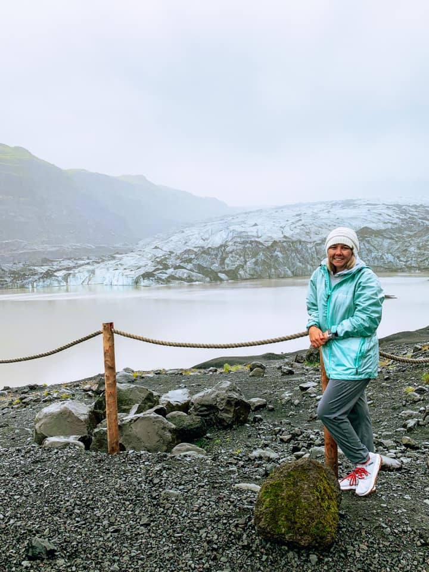
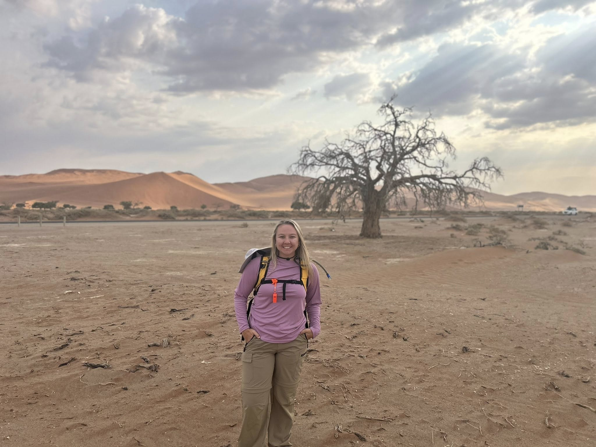

They say a picture is worth a thousand words—but how much data is it worth?
In planetary science, images are more than visuals; they are quantitative records of surface processes. I use orbital imagery and radar data to extract measurable information about planetary surfaces, linking morphology to the physical processes that shape it. My research focuses on how surface features reflect interactions with the planetary boundary layer, from sublimation-driven landforms on Mars to radar backscatter from Titan’s dunes and pressure signatures of dust devils. By combining remote sensing, geospatial analysis, and Earth analogs, I aim to better understand how planetary environments evolve over time.
Dust Devils in Motion
Caught an unexpected dust devil in Etosha National Park, Namibia. Personal excursion, October 2025.
I am currently a postdoctoral researcher in Brian Jackson’s research group, where I study dust devils as atmospheric vortices and their role in surface–atmosphere interactions on Mars. This work builds on established frameworks for identifying and characterizing dust devils using their pressure structure and dynamics, with the goal of understanding how boundary layer processes drive dust lifting and surface change.
Martian Polar Processes
The Martian polar caps are shaped by the seasonal exchange of carbon dioxide between the surface and atmosphere. Each winter, CO2 condenses onto the poles, forming a layer of frost and ice that sublimates back into the atmosphere during summer. This cycle drives active surface–atmosphere interactions and plays a central role in Mars’ present-day climate.
My research focused on the Martian South Polar Residual Cap, a unique and dynamic reservoir of CO2 ice. Here, sublimation sculpts the surface into expanding depressions known as Swiss Cheese Features. Using high-resolution orbital imagery, I quantified how these features grow over time to constrain rates of mass loss and assess whether the cap is in equilibrium with the atmosphere.
By tracking these changes across multiple spatial and temporal scales, this work provides insight into modern climate variability on Mars and the processes driving polar landscape evolution.

While I can’t get to Mars, I can get to ice. Sólheimajökull Glacier, Iceland. Personal trip, July 2021.
Titan Aeolian Processes

The next best thing to Titan’s dunes. Sossusvlei, Namibia in October 2026 during NASA-funded field work.
Titan hosts vast equatorial dune fields composed of organic sediments, shaped by complex interactions between atmospheric circulation and surface processes. Because Titan’s surface is obscured by a thick haze, radar is the primary tool for observing these landscapes. Data from the Cassini–Huygens mission revealed extensive linear dunes that record long-term wind patterns and sediment transport across the moon’s surface.
My research used radar backscatter to investigate the physical properties of these dunes and what they reveal about Titan’s environment. By applying multiple scattering models and comparing Titan to Earth analogs like the Namib Sand Sea, I test whether observed radar signals can be explained by surface properties alone or require contributions from subsurface structure.
This work showed that Titan’s dunes cannot be fully described using surface-only models, pointing to the importance of volumetric scattering, internal porosity, or compositional layering. These results provide insight into the structure of Titan’s dune materials and improve how we interpret radar observations of planetary surfaces.